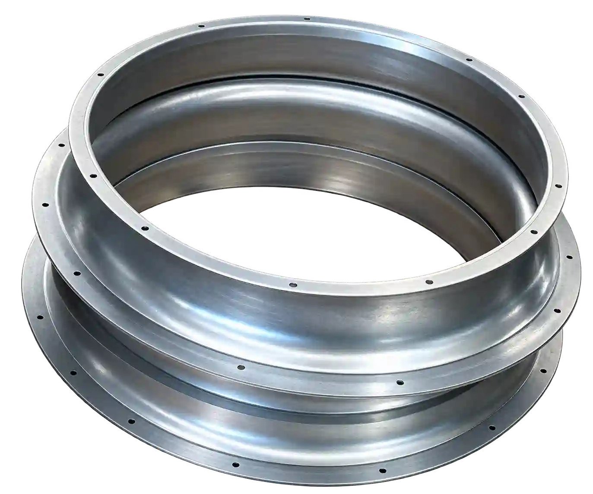
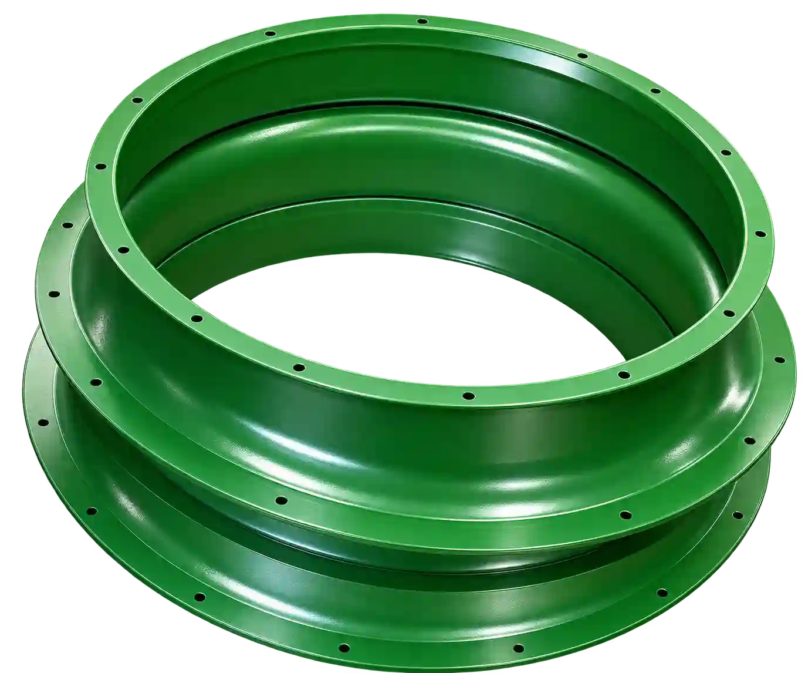

El recubrimiento no corrige por sí solo una superficie contaminada. Aceite, polvo, sales, oxidación y residuos pueden interferir con la adherencia o aparecer bajo el acabado. Por eso la preparación se define antes de aplicar pintura.
El acabado comienza antes de aplicar la pintura.


Contaminantes de fabricación
Aceites de corte, grasas, polvo y residuos de soldadura pueden permanecer aunque la pieza parezca limpia. Deben identificarse y retirarse mediante un proceso compatible.
Oxidación y recubrimientos anteriores
Óxido, cascarilla o pintura vieja requieren evaluación. Cubrirlos sin una ruta adecuada puede ocultar temporalmente un problema sin resolver la interfaz.
Limpieza y desengrase
Producto, concentración, tiempo, temperatura, enjuague y secado deben controlarse de acuerdo con el proceso. No existe un limpiador universal para todos los metales y suciedades.
Tratamientos de conversión
Fosfatizado u otros tratamientos pueden utilizarse cuando corresponda al sustrato y desempeño. Su selección debe considerar especificación, química y mantenimiento del baño.
Acero frente a aluminio
La química superficial y los óxidos naturales difieren. Un tratamiento apropiado para acero al carbón no debe asumirse automáticamente para aluminio.
Piezas usadas
Grasa absorbida, silicón, corrosión, reparación previa o contaminación de servicio pueden requerir pruebas. Fotografías y antecedentes ayudan a decidir si la pieza es recuperable.
Información útil para solicitar una evaluación
Comparte fotografías claras, dimensiones, material, cantidad, color o referencia, acabado, uso interior o exterior, áreas que no deben pintarse y fecha requerida. Si algún dato todavía no está definido, indícalo: el objetivo es revisar el proyecto con información real, no completar supuestos.
Tuled se encuentra en Apodaca.
Desde Jardines de la Primavera 865 atendemos solicitudes relacionadas con pintura electrostática para empresas de Monterrey y su área metropolitana. La capacidad, preparación, formulación y plazo se confirman para cada proyecto.
Evaluar la preparación de mis piezas.
Envíanos fotografías, medidas y cantidad para comenzar la revisión.
Evaluar la preparación de mis piezasFuentes técnicas consultadas
- Powder Coating Institute: What is Powder Coating?
- Powder Coating Institute: preguntas técnicas frecuentes
La información describe principios generales. La ficha técnica del producto y la especificación del cliente prevalecen en cada proyecto.